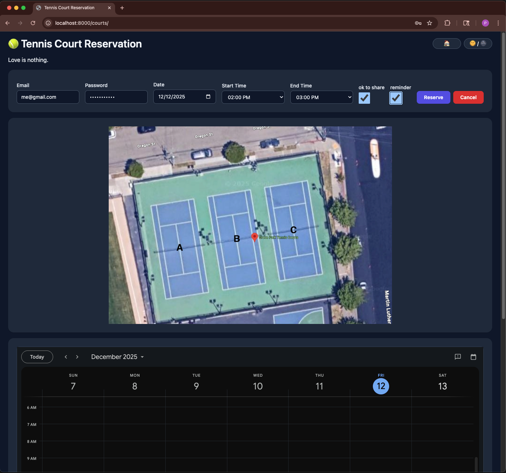

reserve-it!


A dead-simple reservation system web app framework, built on Google Calendar and Mkdocs-Material, implemented as a Mkdocs plugin. Designed with the goal of making communal sharing and coordination effortless and ubiquitous.
reserve-it is a lightweight framework that enables rapidly building a web app for
shared community amenity/resource reservations. It provides a customizable validation
logic layer around creating events in a restricted but publicly viewable Google
calendar. As a Mkdocs plugin, it makes use of Mkdocs-Material for the frontend build,
and so you can easily customize site aesthetics with tools from the Mkdocs
ecosystem in mkdocs.yml.
App users don't need to make an account, the base configuration only requires an email address. You can choose whether or not to implement a shared password or other authentication in the web form, see below.

Basic Setup
All it takes to build a resource reservation system website for your organization/community:
-
Make a dedicated Google account for your organization, and a Google calendar for each reservable resource. If you're familiar with the concept of "Resources" from Google Workspace, we're using individual calendars as a bootleg version of that.
-
Set up an installed app client secret for your Google Calendar account. Detailed instructions forthcoming!
-
Install the reserve-it package in your python environment with
pip install reserve-itoruv add reserve-it. -
To see a non-functional example of the site frontend build template on
localhost:8000, runreserve-it serve-example. Note that the embedded calendar view won't work since it's serving the page template directly (you'll see a bit of jinja syntax that the app uses to serve it), but you'll get a decent idea anyway. -
If you like what you see, run
reserve-it initto copy the necessary structure directly from the package'sexampledirectory into your current working directory. If you have a.gitignorefile already in your directory, the recommended default ignores will be appended. Now you'll have the following structure: -
Modify the global config file
app-config.yamlto suit your needs. Example:# FastAPI app title, also used for home page title if multiple resources are configured title: Reserve-It Example # FastAPI app description, also used for home page subtitle if multiple resources are # configured description: Form server for shared community amenity/resource reservations. # App version version: 0.1.0 # App email address that users receive confirmation/reminder emails from app_email: app@email.com # Timezone used by all calendars timezone: America/Los_Angeles # Optionally, add custom form fields to all resource reservation webpages. These can be # validated by defining a custom ReservationRequest (pydantic model) subclass in the # python script. Individual resource pages can add more fields on top of this. # The keys shown are required, but any legal html form input element styling key for the # specified type is also allowed. # You may not have guessed, but this one defines a password form field. custom_form_fields: - type: password # a valid html form input element type name: password # variable name, the ReservationRequest subclass must have this as a field label: Password # form label string displayed required: True # can't leave it blank # Optionally, add a contact email address that users can badger about issues with all # resource reservations. "Contact [email] to report issues (click to copy)." will appear # at the bottom of all webpages. This can be overridden on a per-resource basis. contact_email: contact@email.com -
Add your resource reservation config yaml files under
resource-configs, one for each set of resources, like this:# resource page title name: Tennis Courts # displayed along with title emoji: 🎾 # resource page subtitle description: Love is nothing. # the google calendar ids for each individual tennis court, and their hex colors for the # embedded calendar view. calendars: CourtA: id: longhexstring1@group.calendar.google.com color: "#AA0000" CourtB: id: longhexstring2@group.calendar.google.com color: "#00AA00" CourtC: id: longhexstring3@group.calendar.google.com color: "#0000AA" day_start_time: 8:00 AM day_end_time: 8:00 PM # the granularity of available reservations, here it's every hour from 8 to 8. minutes_increment: 60 # the maximum allowed reservation length maximum_minutes: 180 # users can choose whether to receive an email reminder minutes_before_reminder: 60 # how far in advance users are allowed to make reservations maximum_days_ahead: 14 # users can indicate whether they're willing to share a resource with others, adds a # checkbox to the form if true allow_shareable: true # Optionally, add additional custom form fields to this resource reservation webpage, on # top of the ones defined in app-config.yaml custom_form_fields: - type: number name: ntrp label: NTRP Rating required: True # Optionally, specify a path to a descriptive image for this resource, displayed on the # form webpage. Must be a path relative to resource-configs dir. image: path: courts.jpg caption: court map pixel_width: 800 -
Modify the default Mkdocs config file
mkdocs.ymlto suit your aesthetic needs. Also if you want additional static pages added to your site, you can add them as markdown files underdocsin standard Mkdocs fashion.mkdocs.ymlmust include the following: -
Build the static portion of the site with
mkdocs build. It will build to the directorysiteby (Mkdocs) default. -
Write a simple python script to define custom form input validation, and then build the dynamic web app from the Mkdocs build:
import os from pathlib import Path from typing import Self import uvicorn from pydantic import model_validator from reserve_it import ReservationRequest, build_app # This subclass handles password validation, from the password field defined in # `app-config.yaml` under `custom_form_fields` class PasswordProtectedRequest(ReservationRequest): password: str @model_validator(mode="after") def check_password(self) -> Self: if self.password != os.getenv("PASSWORD"): raise ValueError("Invalid input") return self PROJECT_ROOT = Path(__file__).parent GCAL_CREDS_DIR = PROJECT_ROOT / ".gcal-credentials" if __name__ == "__main__": # NOTE: if PROJECT ROOT is your current working dir, these commented out Path args # are the defaults app = build_app( # app_config=PROJECT_ROOT / "app-config.yaml", # resource_config_path=PROJECT_ROOT / "resource-configs", # sqlite_dir=PROJECT_ROOT / "sqlite-dbs", # gcal_secret_path=GCAL_CREDS_DIR / "client-secret.json", # gcal_token_path=GCAL_CREDS_DIR / "auth-token.json", # site_dir=PROJECT_ROOT / "site", request_classes=PasswordProtectedRequest, ) uvicorn.run(app, host="127.0.0.1", port=8000) -
Host the app somewhere accessible to your community, and disseminate any shared passwords/validation information through communication channels.
Features
- You have the rich aesthetic customization capabilities of the Mkdocs ecosystem and Mkdocs-Material theme at your fingertips. The default config includes a light/dark mode toggle that respects user system settings by default.
- Users don't need to make accounts or log in, an email address is the only required form of identification.
- Users receive email confirmation for their reservation in the form of a Google calendar invite. A reservation is represented by a normal calendar event that the user is invited to, which they can conveniently add to their own calendar.
- Additionally users can opt to receive a reminder email N minutes before their reservation.
- One reservation can be held per email address at a time. A minimal sqlite database is stored on the server to enforce this. Users can cancel their reservations to reschedule.
- Each independently reservable resource (ie. a single tennis court) is backed by its own Google calendar. When a user submits a reservation, each included calendar is checked, and the first calendar found to be available during the selected time is selected.
- The page elements, time granularity and other configuration for each set of related resources (ie. a set of tennis courts) are ergonomically defined in a single yaml file (see the yaml example [7] above). Each yaml file maps to a single reservation webpage.
- Each reservation webpage displays a form input, and optionally an embedded calendar view and an arbitrary descriptive image you provide.
- For resources that can be shared between multiple users at once (like say, a sauna), users can select that they are willing to share with others. If they are, subsequent users who are willing to share can reserve overlapping times, while users who are not willing to share are barred from these times.
- You may define custom form input fields and validation logic either globally or per reservation page via the yaml files. This data will be available for validation only, but not stored to the database.
TODO
- If requested, could add flexibility in persistent database storage and related validation.